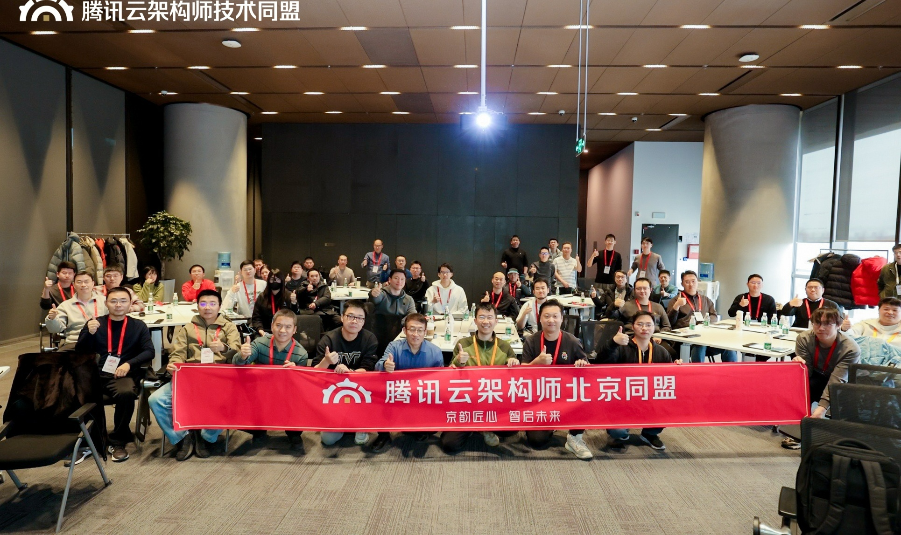

01 · 知识体系
知识体系
文章、知识树与刊物形成系统化学习闭环。
同盟文章列表持续聚合同盟成员公开文章，适合作为知识入口首页。
架构知识树用专题视角梳理核心议题，帮助成员快速找到学习路径。
《架构之道》刊物把精选案例、观点和趋势压缩成可分享的阅读单元。

页面不再堆砌卡片和示意图，而是回到更清晰的品牌结构、稳定的页面节奏和更贴近真实同盟活动的图像素材，让整站先具备“可信”和“能看”的气质。
保留原文章的五条主线，但把每一条都改造成可以直接点击、可以继续扩展、也更容易被新成员理解的官网入口。
文章、知识树与刊物形成系统化学习闭环。
沙龙、峰会与回顾内容覆盖线上线下多层次交流。

地区社群与在线社区连接全国架构师网络。

专访、专题内容与官方展示增强成员专业影响力。

成长值体系让学习、分享与贡献被持续看见。

将北京、深圳、上海、成都、长沙、合肥六地资源页聚合到统一入口中，适合后续继续扩展成城市分站或二级页面。